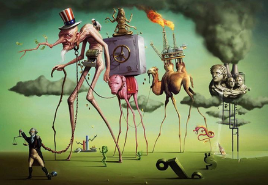

Hey there!
Welcome to my website!
Woo-hoo!!! This means that my software development journey has officially started!
It took me several years to realize that building tech products and solving problems programmatically is what really
inspires me but I am here now!
And here is what I am planning on doing as a software developer:
I am going to imagine
As engineers, we need to dream, imagine, and generate ideas of items that need to be improved or do not even exist.
You may have noticed that all of the images on this page are the works of the Spanish artist
Salvador Dali who is famous for
his rather creative and often quite extraordinary works. I think, just like Dali, software developers should have the
courgae to think outside the box and develop ideas that will make impact on the world.
I am going to experiment
I really like the comparison mentioned during the Flatiron prework between the Git Version Control and oil paint, the invention of
which allowed artists to experiment with colors. Being able to create and test your idea over and over allows you to
really create something that is going to fulfill its true purpose!

Programming allows us to bring our ideas into life, test, and see if they make sense.
Perhaps, putting various objects on really long legs is not always a good idea, but as coding artists, we
can try it and pivot as needed.
I am going to solve problems
As programmers, we start with an idea, and with the help of technology bring it into existence.
We get to witness letters of code materialize into tangible items and then integrate these items into
people's lives so that, hopefully, their lives can get a little easier and happier.
I am going to make my voice heard
... by making others think!
Look at this piece of art by Salvador Dali in his museum in Figueres, Spain. From afar (60ft) it looks like a picture of
President Lincoln.
Now come closer to it by hovering over the picture with your mouse, and you will see the smaller details that comprise this artwork.
The main one there is the naked silhouette of Dali's wife, Gala, contemplating the Mediterranean Sea. Pretty cool, right?
Like Dali and many other artists, I want to convey my thoughts to the world through my work. I want to engage people with the
products I build and share my perspective directly and indirectly, and I think that being a software developer
gives you a lot of great opportunities to do just that!